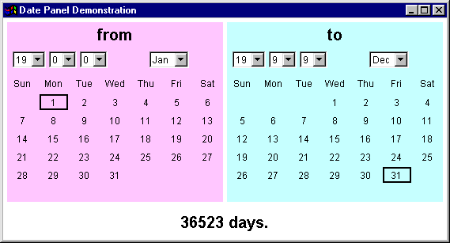

The BetweenDates applet

This applet contains two instance of the DatePanel class
and listens to both of them, re-computing the number of days
between the two panels whenever either generates an ActionEvent.
The computation of the number of number of days between two dates
is accomplished by using instances of the JulianDate hierarchy.
(Details of this hierarchy will not be given but the sources
will be made available.)